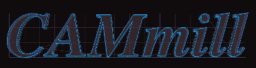
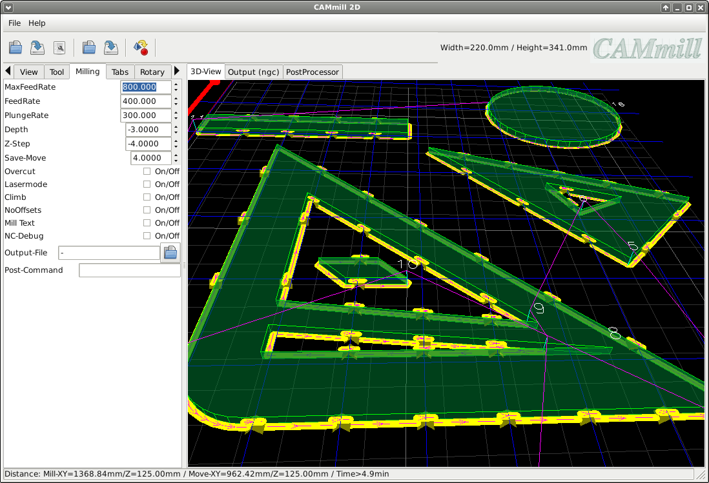

Milling
Fräs-Parameter
MaxFeedRate:
Berechneter maximaler Vorschub in mm/minute (ReadOnly)
FeedRate:
Vorschub in mm/minute
PlungeRate:
Vertikaler Vorschub in mm/minute
Depth:
Frästiefe in mm (negativ)
:
Frästiefe pro Durchgang in mm (negativ)
Save-Move:
Abstand zum Material für schnelle Bewegungen in mm (positiv)
Overcut:
Zum ausfräsen von Innenkanten die bedingt durch den Werkzeug-Radius nicht errecht werden können (kann pro Objekt überschrieben werden)
Lasermode:
das 'Werkzeug' wird auf Z0.0 gefahren und für jedes Fräsbahn an und aus geschaltet (kann pro Objekt überschrieben werden)
Climb:
Gleichlauffräsen, dabei wird das Werkstück in Drehrichtung des Fräsers bewegt (kann pro Objekt überschrieben werden)
NoOffsets:
Alle Offsets werden deaktiviert, z.B. zum Gravieren von Konturen (kann pro Objekt überschrieben werden)
Mill Text:
MTEXT-Elemente aus DXF-Dateien werden als Fräsbahn behandelt
NC-Debug:
nur zum prüfen der Fräsdaten-Ausgaben, alle Konturen werden zusätzlich ohne Offsets übergeben
Output-File:
Pfad der Ausgabe-Datei
Post-Command:
Ein Befehl der nach dem speichern der Ausgaben ausgeführt wird, z.B. zum kopieren der Datei auf die CNC-Maschine (copy2cnc.sh %s)